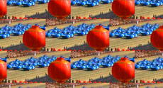

Lulu Li

Beijing Dance | Peking 2008
Die Arbeit entstammt einem Projekt von onedotzero, London, und MTV Asia. Gezeigt mit freundlicher Genehmigung.
Chinese Message | London 2008
Untiteled | Peking 2011 | Weltpremiere
Lulu Li wurde 1972 in der Provinz Shandong geboren, wo sie auch aufwuchs und an der Kunsthochschule von Dong'e studierte. Mitte der 90er-Jahre verlegte sie ihren Wohnsitz nach Peking, wo sie seither, mit Arbeitsaufenthalten in Shanghai und Kuala Lumpur, lebt und arbeitet. 2009 begann sie ein Studium an der Master Class des Chelsea College of Art in London, das sie 2010 abschloss. Seither pendelt sie zwischen ihren Ateliers in Peking und London.